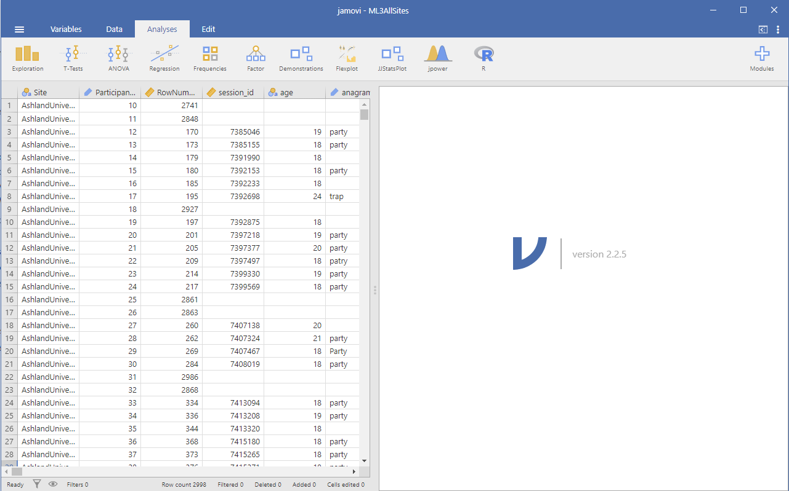
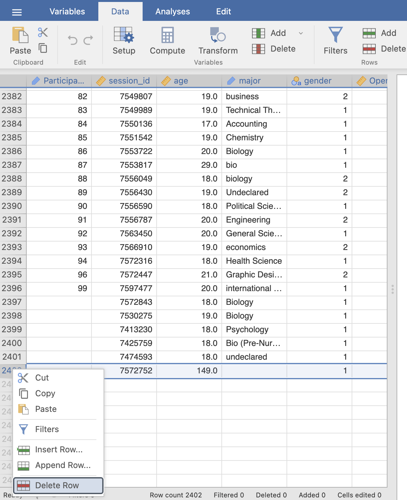
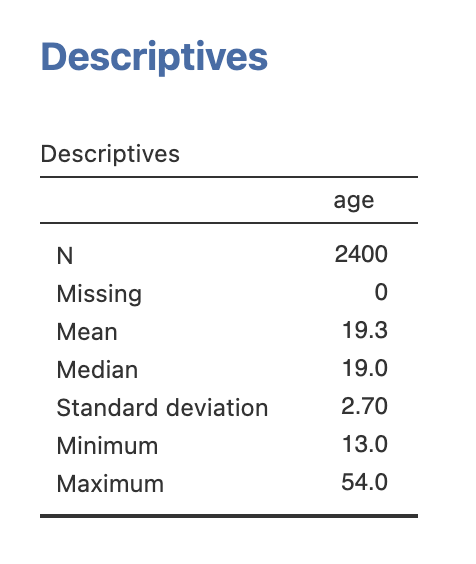
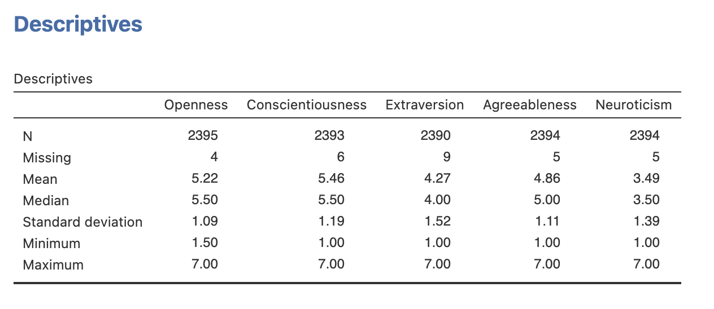
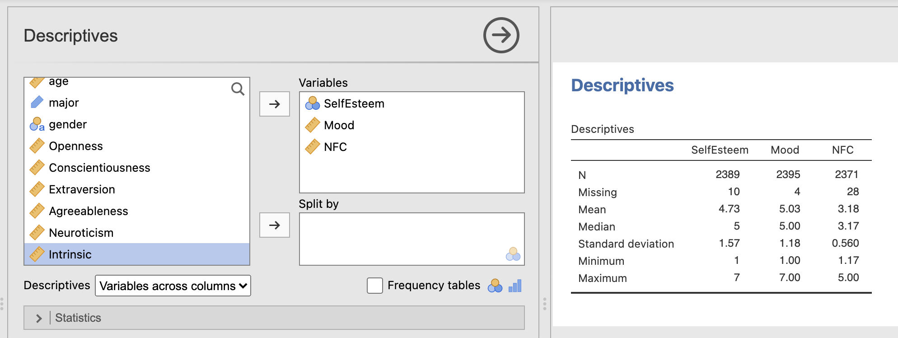
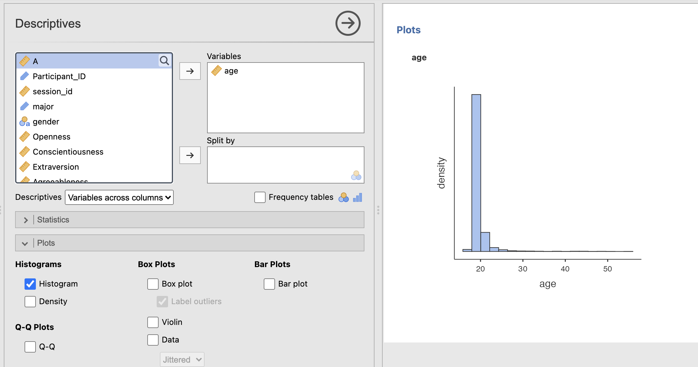
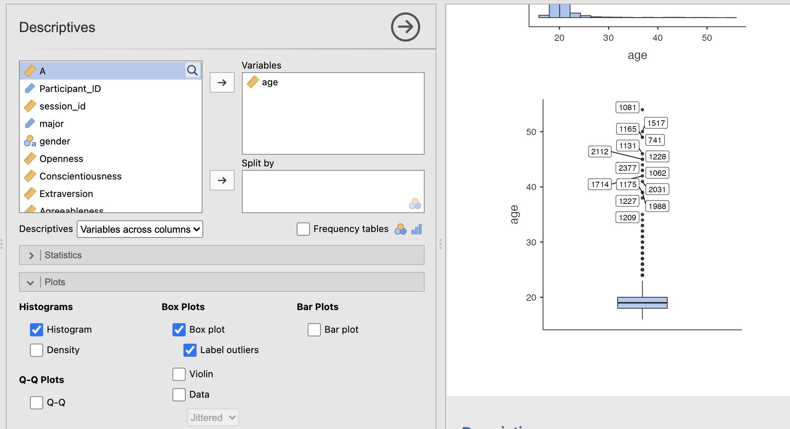
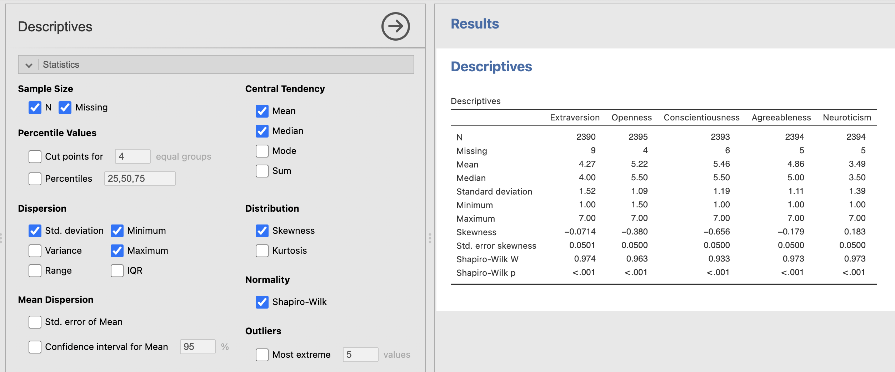

Week 1 : Exploring new data and computing descriptives
This week we will explore how to use Jamovi to compute and visualise descriptive statistics from a dataset. This will include some revision on Jamovi from last semester and an introduction on how we can use the R coding language to simplify complex data processing.
Learning Objectives
| Quantitative Methods | |
|---|---|
| Measures of central tendency (Mean and Median) | |
| Measures of dispersion and spread (Standard Deviation and Interquartile Range) | |
| Measures of skew and normality | |
| Recognising different types of distribution |
| Data Skills | |
|---|---|
| Exploring and cleaning datasets Jamovi | |
| Computing descriptive statistics in Jamovi | |
| Computing descriptive plots in Jamovi |
| Open Science | |
|---|---|
| Working with openly available research data |
1. The Dataset
We will be exploring data that was collected as part of the ‘Many Labs 3’ project (Ebersole et al. 2016). This collected data from university students in the USA across a wide range of cognitive, behavioural and demographic measures. We will be exploring a subset of this dataset concerning individual differences in personality measures. The experimenters collected data to compute the ‘Big Five’ personality factors from each participant. Wikipedia describes the factors as:
- Conscientiousness (efficient/organized vs. extravagant/careless)
- Agreeableness (friendly/compassionate vs. critical/rational)
- Neuroticism (sensitive/nervous vs. resilient/confident)
- Openness to experience (inventive/curious vs. consistent/cautious)
- Extraversion (outgoing/energetic vs. solitary/reserved)
This is a very simple (Gosling, Rentfrow, and Swann 2003) and influential model that is used to summarise personality differences. Though it is popular, some researchers have criticised big five factors for conceptual and methodological reasons (Block 1995). Read around and form your own view!
The data contains the average of two questions about each factor in which participants responded to questions using a scale from 1 to 7. A value of 1 indicates a low score and a value of 7 is a high score. For example, someone with an extraversion score of 2 is more introverted that someone with an extraversion score of 5.
2. The Challenge
We have data from a sample of students in a big data table. This raw data needs to be summarised and visualised so that we can turn this massive block of numbers into something intuitive.
We can generate a concise overview of the main characteristics of the data by computing and visualising few key features from the data.
We’ll be working with Jamovi throughout this practical.
Working on campus? You can open Jamovi through AppsAnywhere, either open the desktop application through the start menu on a campus computer or Birmingham’s AppsAnywhere website.
Take a look at these frequently asked questions or ask your tutor if you get stuck.
Working on your own computer? You can install Jamovi (for free!) folling these instructions. Install the ‘Desktop’ application - not the ‘Cloud’ version.
3. Exploring a new dataset in Jamovi
This computer practical will have some revision from RM-A, please check your notes from RM-A for help with loading data and handling variables.
If you aren’t familiar with Jamovi, or would like a refresher - please take a quick look at the following topics in the Jamovi user guide
Please ask your tutor for help in the computer practical sessions if you need any assistance.
Let’s start by loading the dataset into Jamovi. You can download the file ML3AllSites_RMB.csv from canvas.
You can import csv files directly into Jamovi. There is more information in the Jamovi Textbook
It’s easy to open csv files in Jamovi. From the top left menu (the button with three parallel lines) choose ‘Open’ and browse to where you have stored the csv file on your computer. If you’re on a Mac, it’ll look like the usual Finder window that you use to choose a file; on Windows it looks like an Explorer window. Find the one you want, then click on the ‘Open’ button.

This is the original dataset provided by the authors of the paper! It is a massive dataset - take a moment to get familiar with it by answering the following questions.
Some of the questions will require you to run a descriptive statistics analysis on the age variable. Run what ever you need to explore the data and the questions.
This process of exploring and understanding your data is a critical first step when working on a new analysis. Real data is rarely in perfect condition - we have to take some time and apply common sense to understand the data and what challenges there might be when analysing it.
If we do identify issues, such are large amounts of missing data, incorrect data types or mistakes in data entry, we can normally fix them - but only if they’ve been spotted! If we assume our data is perfect and go straight to the analysis then we could end up including a 149 year old student in our sample…
4. Data cleaning
Its probably not a good idea to include the data from the participants with impossible ages in our analysis. One simple step we can take is just to remove those rows from our analysis.
Remove the two participants with impossible ages, you can use the extreme values table in the ‘Descriptives’ output to help find the row numbers. You can remove a row in Jamovi by right clicking on the row number (far left of the Data view) and clicking ‘Delete Row’.

This will not change the original data file (unless you export the data back out again..), it will only affect the view of the data loaded into Jamovi. If you make a mistake you can simply load the original file and start again.
Notice that the bottom of the data viewer tells you how many rows have been deleted in that dataset.
Now you can recompute the descriptive statistics of your age variable and see what has changed.

The mean is pretty much the same - still 19.3 - but the standard deviation is much smaller now. It has reduced from 3.81 to 2.70. That is a close to 25% reduction in the estimate of the variability of this data - big difference. Including outliers like these can have a large impact on our analyses.
This process can be intricate and involves a lot of clicking in Jamovi - it would be easy to make a mistake and not notice that something has gone wrong. We’ll explore some faster and more transparent ways to do this using R code during this course.
5. Descriptives from big-5 personality factors
Ok, let’s move on to personality factors. As we said at the top, the big five factors are recorded on a scale from 1 to 7. A value of 1 indicates a low score and a value of 7 is a high score. So someone with an Extraversion score or 6 might be very outgoing where as someone with a score of 1 would be more of an introvert.
Compute the descriptive statistics for the big 5 personality factors.
Take some time to consider the data quality - use the questions we answered with age as a guide for what to think about.

Notice that we have a few missing data values in these variables. Jamovi will remove these from any analyses so they shouldn’t affect our descriptive statistics.
Try your best with this question and don’t forget to speak with your tutor if you get stuck!
You have reproduced the descriptive statistics for the big 5 personality factors. Now you can do the same for some of the other factors in Table 2 of section 3.5 in Ebersole et al. (2016).
Specifically - try and compute the mean and standard deviations for the following factors (Descriptions of the factors are the the cited section of Ebersole et al. (2016)):
- Self Esteem (see section 3.5.1)
- Daily Mood (see section 3.5.3)
- Need for cognition (see section 3.5.5)
Can you find variables (columns) that correspond to these factors?
Note: Open datasets sometimes use shorthand for variable names rather than the names used in the manuscript. This is not ideal but does happen in practice! we should be ready take a little time to explore and understand a new dataset when working with it.
In this case the variables in the dataset to use are:
| In Manuscript | In Jamovi |
|---|---|
| Self Esteem | ‘SelfEsteem’ |
| Daily Mood. | ‘Mood’ |
| Need for cognition | ‘NFC’ |
Talk to your tutor if you’re getting stuck.
You should be able to reproduce the following table. Verify that the computed Mean and Standard Deviations match those published in table 2 of Ebersole et al (2016)

The final mean values are very close to the values in Ebersole et al. (2016) - but not identical. Looks like the original paper kept in all the data that had missing or unusual age values.
Next, let’s think about the distributions of these variables. Its great to think about summarising a dataset with its mean value, but this doesn’t tell us about the wider distribution.
6. Visualising distributions
Next we’ll have a look at computing histograms from this data. Remember that histograms divide the data range into intervals called bins. The choice of bin width and number of bins can affect the appearance and interpretation of the histogram. Most of the time we can use the automatic bin definitions provided by Jamovi.
We can use Histograms to explore a few key factors of the wider data distributions that are hard to see from the descriptive statistics tables.
- Shape: The shape of the histogram can reveal the distribution pattern of the data, such as normal distribution, skewness, or bimodality.
- Outliers: Histograms can help identify outliers or unusual data points that fall outside the general pattern.
Jamovi makes it very simple to compute a histogram. Open the ‘Plots’ sub-menu of the descriptive statistics tab and select the ‘Histogram’ checkbox.
Compute a histogram of the participant ages

The descriptives tables give us a numerical summary of the data - but this can be hard to build an intuitive understanding of the dataset. A histogram gives us something immediately interpretable on a more ‘human’ level. Have a think about the following questions.
If you haven’t heard about the ‘normal distribution’ in your previous studies, this is a good opportunity to ask Copilot to give you a simple explanation.
We can get an alternative perspective by visualising our data using a ‘Box Plot’.
Compute a Box plot of the participant ages

The boxplot visualises the median and interquartile range (25th to 75th percentile) of the data, as well as highlighting outliers. This gives us less resolution around the middle of the distribution close to the median - but does give a much clearer view of the long tail in the ages of the student data sample.
Try your best with this question and don’t forget to speak with your tutor if you get stuck!
Compute histograms and/or boxplots for the big-5 personality factors and take some notes their distributions. Think about the following questions for each factor:
- Is the distribution symmetric?
- If not, is there a positive or a negative skew?
- Are there any outliers?
Write some quick notes on your answers - we’ll use these again in the next section
It might be easiest to do this one factor at a time to avoid being swamped with figures!
Create the figure for a single factor, make some notes and make the next figure with the next factor. You can consider saving the figure into a notebook or document if you want to make a more controlled comparison.
If you aren’t sure about any of the concepts - this is a good opportunity to ask your tutors in the session - or use Copilot to give you a simple explanation.
Here are my notes about each distribution:
- Openness, this does not look like a normal distribution - there is a negative skew in the data.
- Conscientiousness, this is definitely not a normal distribution - there is a strong negative skew.
- Extraversion, this is close to being a normal distribution - perhaps a very slight negative skew.
- Agreeableness, this does not look like a normal distribution - there is a negative skew in the data.
- Neuroticism, this does not look like a normal distribution - there is a positive skew in the data.
None of the factors have obvious outliers.
7. Computing statistics for normality and skewness.
As a final step, we can see if our intuitions about the distribution of big-5 personality factors match with more formal statistics measures checking for normal distributions and skewness.
Compute statistics Shapero-Wilk’s test for normality and for ‘Skewness’. You can add both of these tests from the ‘Statistics’ sub-menu of the Descriptives analysis.

Normal Distributions.
The Shapiro-Wilk test evaluates whether a sample comes from a normally distributed population. It returns 2 values:
- ‘W’ The W statistic measures how well the data conforms to a normal distribution. It ranges from 0 to 1 where values close to 1 indicate the data is normally distributed.
- ‘p’ is a p-value indicating the probability that we could see a value of W at least as large as the one we have measured if the data really were normally distributed. Typically, we would say that the data are not normally distributed if p is less than or equal to 0.05.
Skewness
The skewness metric returns a number close to zero if the data are symmetrical around zero, and a number close to +1 or -1 if the data are skewed. The sign of the skewness value indicates whether there is a positive or a negative skew.
8. Summary
In this session we have gone through the process of exploring a dataset from a published scientific article. We have computed a range of descriptive statistics and used histograms and boxplots to visualise the dataset.
It is common for publicly available data to contain little mistakes and issues. We need to go through a process like this with every new dataset and it should be like second nature by the end of this module. Remember to use common sense and practical thinking to identify issues and think about possible solutions.
Remember this process when collecting your own data. Think carefully about how you can avoid typos and mistakes when collecting a dataset. It can save you and your collaborators a lot of time in future!